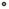
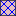

<!doctype html>
<html lang="en">
    <head>
        <meta charset="utf-8">
        <meta http-equiv="X-UA-Compatible" content="IE=edge">
        <meta name="viewport" content="initial-scale=1,user-scalable=no,maximum-scale=1,width=device-width">
        <meta name="mobile-web-app-capable" content="yes">
        <meta name="apple-mobile-web-app-capable" content="yes">
        <link rel="stylesheet" href="css/leaflet.css"><link rel="stylesheet" href="css/L.Control.Locate.min.css">
        <link rel="stylesheet" href="css/qgis2web.css"><link rel="stylesheet" href="css/fontawesome-all.min.css">
        <link rel="stylesheet" href="css/leaflet-measure.css">
        <style>
        html, body, #map {
            width: 100%;
            height: 100%;
            padding: 0;
            margin: 0;
        }
        </style>
        <title></title>
    </head>
    <body>
        <div id="map">
        </div>
        <script src="js/qgis2web_expressions.js"></script>
        <script src="js/leaflet.js"></script><script src="js/L.Control.Locate.min.js"></script>
        <script src="js/multi-style-layer.js"></script>
        <script src="js/leaflet.rotatedMarker.js"></script>
        <script src="js/leaflet.pattern.js"></script>
        <script src="js/leaflet-hash.js"></script>
        <script src="js/Autolinker.min.js"></script>
        <script src="js/rbush.min.js"></script>
        <script src="js/labelgun.min.js"></script>
        <script src="js/labels.js"></script>
        <script src="js/leaflet-measure.js"></script>
        <script src="data/linhares_poligonos_2.js"></script>
        <script src="data/linhares_pontos_3.js"></script>
        <script>
        var highlightLayer;
        function highlightFeature(e) {
            highlightLayer = e.target;

            if (e.target.feature.geometry.type === 'LineString') {
              highlightLayer.setStyle({
                color: '#ffff00',
              });
            } else {
              highlightLayer.setStyle({
                fillColor: '#ffff00',
                fillOpacity: 1
              });
            }
        }
        var map = L.map('map', {
            zoomControl:true, maxZoom:28, minZoom:1
        }).fitBounds([[40.53810111015514,-7.464756147236249],[40.54175210832325,-7.4599929099930025]]);
        var hash = new L.Hash(map);
        map.attributionControl.setPrefix('<a href="https://github.com/tomchadwin/qgis2web" target="_blank">qgis2web</a> &middot; <a href="https://leafletjs.com" title="A JS library for interactive maps">Leaflet</a> &middot; <a href="https://qgis.org">QGIS</a>');
        var autolinker = new Autolinker({truncate: {length: 30, location: 'smart'}});
        L.control.locate({locateOptions: {maxZoom: 19}}).addTo(map);
        var measureControl = new L.Control.Measure({
            position: 'topleft',
            primaryLengthUnit: 'meters',
            secondaryLengthUnit: 'kilometers',
            primaryAreaUnit: 'sqmeters',
            secondaryAreaUnit: 'hectares'
        });
        measureControl.addTo(map);
        document.getElementsByClassName('leaflet-control-measure-toggle')[0]
        .innerHTML = '';
        document.getElementsByClassName('leaflet-control-measure-toggle')[0]
        .className += ' fas fa-ruler';
        var bounds_group = new L.featureGroup([]);
        function setBounds() {
        }
        map.createPane('pane_GoogleSatellite_0');
        map.getPane('pane_GoogleSatellite_0').style.zIndex = 400;
        var layer_GoogleSatellite_0 = L.tileLayer('https://mt1.google.com/vt/lyrs=s&x={x}&y={y}&z={z}', {
            pane: 'pane_GoogleSatellite_0',
            opacity: 1.0,
            attribution: '<a href="https://www.google.at/permissions/geoguidelines/attr-guide.html">Map data ©2015 Google</a>',
            minZoom: 1,
            maxZoom: 28,
            minNativeZoom: 0,
            maxNativeZoom: 20
        });
        layer_GoogleSatellite_0;
        map.addLayer(layer_GoogleSatellite_0);
        map.createPane('pane_OpenStreetMap_1');
        map.getPane('pane_OpenStreetMap_1').style.zIndex = 401;
        var layer_OpenStreetMap_1 = L.tileLayer('https://tile.openstreetmap.org/{z}/{x}/{y}.png', {
            pane: 'pane_OpenStreetMap_1',
            opacity: 1.0,
            attribution: '',
            minZoom: 1,
            maxZoom: 28,
            minNativeZoom: 0,
            maxNativeZoom: 19
        });
        layer_OpenStreetMap_1;
        map.addLayer(layer_OpenStreetMap_1);
        function pop_linhares_poligonos_2(feature, layer) {
            layer.on({
                mouseout: function(e) {
                    for (i in e.target._eventParents) {
                        e.target._eventParents[i].resetStyle(e.target);
                    }
                },
                mouseover: highlightFeature,
            });
            var popupContent = '<table>\
                    <tr>\
                        <th scope="row">Propriedade</th>\
                        <td>' + (feature.properties['nome'] !== null ? autolinker.link(feature.properties['nome'].toLocaleString()) : '') + '</td>\
                    </tr>\
                    <tr>\
                        <th scope="row">CNS</th>\
                        <td>' + (feature.properties['CNS'] !== null ? autolinker.link(feature.properties['CNS'].toLocaleString()) : '') + '</td>\
                    </tr>\
                </table>';
            layer.bindPopup(popupContent, {maxHeight: 400});
        }

        function style_linhares_poligonos_2_0() {
            return {
                pane: 'pane_linhares_poligonos_2',
                opacity: 1,
                color: 'rgba(35,35,35,1.0)',
                dashArray: '',
                lineCap: 'butt',
                lineJoin: 'miter',
                weight: 1.0, 
                fill: true,
                fillOpacity: 1,
                fillColor: 'rgba(183,72,75,0.34509803921568627)',
                interactive: true,
            }
        }
        function style_linhares_poligonos_2_1() {
            return {
                pane: 'pane_linhares_poligonos_2',
                opacity: 1,
                color: 'rgba(35,35,35,1.0)',
                dashArray: '',
                lineCap: 'butt',
                lineJoin: 'miter',
                weight: 1.0, 
                fill: true,
                fillOpacity: 1,
                fillColor: 'rgba(0,0,255,1.0)',
                interactive: true,
            }
        }
        map.createPane('pane_linhares_poligonos_2');
        map.getPane('pane_linhares_poligonos_2').style.zIndex = 402;
        map.getPane('pane_linhares_poligonos_2').style['mix-blend-mode'] = 'normal';
        var layer_linhares_poligonos_2 = new L.geoJson.multiStyle(json_linhares_poligonos_2, {
            attribution: '',
            interactive: true,
            dataVar: 'json_linhares_poligonos_2',
            layerName: 'layer_linhares_poligonos_2',
            pane: 'pane_linhares_poligonos_2',
            onEachFeature: pop_linhares_poligonos_2,
            styles: [style_linhares_poligonos_2_0,style_linhares_poligonos_2_1,]
        });
        bounds_group.addLayer(layer_linhares_poligonos_2);
        map.addLayer(layer_linhares_poligonos_2);
        function pop_linhares_pontos_3(feature, layer) {
            layer.on({
                mouseout: function(e) {
                    for (i in e.target._eventParents) {
                        e.target._eventParents[i].resetStyle(e.target);
                    }
                },
                mouseover: highlightFeature,
            });
            var popupContent = '<table>\
                    <tr>\
                        <td colspan="2">' + (feature.properties['id'] !== null ? autolinker.link(feature.properties['id'].toLocaleString()) : '') + '</td>\
                    </tr>\
                    <tr>\
                        <td colspan="2">' + (feature.properties['nome'] !== null ? autolinker.link(feature.properties['nome'].toLocaleString()) : '') + '</td>\
                    </tr>\
                    <tr>\
                        <td colspan="2">' + (feature.properties['intensidad'] !== null ? autolinker.link(feature.properties['intensidad'].toLocaleString()) : '') + '</td>\
                    </tr>\
                </table>';
            layer.bindPopup(popupContent, {maxHeight: 400});
        }

        function style_linhares_pontos_3_0(feature) {
            if (feature.properties['intensidad'] >= 1.000000 && feature.properties['intensidad'] <= 10.000000 ) {
                return {
                pane: 'pane_linhares_pontos_3',
                radius: 2.0,
                opacity: 1,
                color: 'rgba(35,35,35,1.0)',
                dashArray: '',
                lineCap: 'butt',
                lineJoin: 'miter',
                weight: 1,
                fill: true,
                fillOpacity: 1,
                fillColor: 'rgba(114,155,111,1.0)',
                interactive: true,
            }
            }
            if (feature.properties['intensidad'] >= 10.000000 && feature.properties['intensidad'] <= 20.000000 ) {
                return {
                pane: 'pane_linhares_pontos_3',
                radius: 9.0,
                opacity: 1,
                color: 'rgba(35,35,35,1.0)',
                dashArray: '',
                lineCap: 'butt',
                lineJoin: 'miter',
                weight: 1,
                fill: true,
                fillOpacity: 1,
                fillColor: 'rgba(114,155,111,1.0)',
                interactive: true,
            }
            }
            if (feature.properties['intensidad'] >= 20.000000 && feature.properties['intensidad'] <= 30.000000 ) {
                return {
                pane: 'pane_linhares_pontos_3',
                radius: 16.0,
                opacity: 1,
                color: 'rgba(35,35,35,1.0)',
                dashArray: '',
                lineCap: 'butt',
                lineJoin: 'miter',
                weight: 1,
                fill: true,
                fillOpacity: 1,
                fillColor: 'rgba(114,155,111,1.0)',
                interactive: true,
            }
            }
        }
        map.createPane('pane_linhares_pontos_3');
        map.getPane('pane_linhares_pontos_3').style.zIndex = 403;
        map.getPane('pane_linhares_pontos_3').style['mix-blend-mode'] = 'normal';
        var layer_linhares_pontos_3 = new L.geoJson(json_linhares_pontos_3, {
            attribution: '',
            interactive: true,
            dataVar: 'json_linhares_pontos_3',
            layerName: 'layer_linhares_pontos_3',
            pane: 'pane_linhares_pontos_3',
            onEachFeature: pop_linhares_pontos_3,
            pointToLayer: function (feature, latlng) {
                var context = {
                    feature: feature,
                    variables: {}
                };
                return L.circleMarker(latlng, style_linhares_pontos_3_0(feature));
            },
        });
        bounds_group.addLayer(layer_linhares_pontos_3);
        map.addLayer(layer_linhares_pontos_3);
        var baseMaps = {};
        L.control.layers(baseMaps,{'linhares_pontos<br /><table><tr><td style="text-align: center;"></td><td>fraco</td></tr><tr><td style="text-align: center;"></td><td>médio</td></tr><tr><td style="text-align: center;"></td><td>forte</td></tr></table>': layer_linhares_pontos_3,' linhares_poligonos': layer_linhares_poligonos_2,"OpenStreetMap": layer_OpenStreetMap_1,"Google Satellite": layer_GoogleSatellite_0,},{collapsed:false}).addTo(map);
        setBounds();
        </script>
    </body>
</html>
